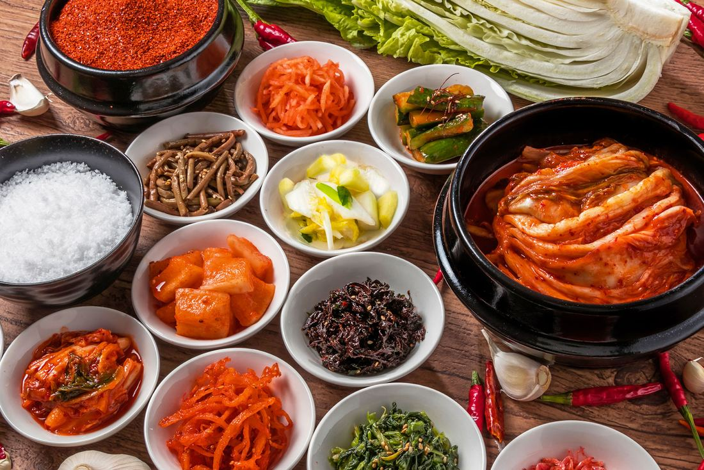

How to Build a Korean Pantry at Home Essentials from Kimchi Mart

Creating a complete Korean pantry at home is one of the best ways to make flavorful meals without last minute grocery trips. Many home cooks in Florida choose Kimchi Mart for this because it offers everything needed for a practical starter kit. If you want a simple place to buy Korean supplies in Florida you can visit Kimchi Mart .
A well stocked pantry helps you cook with confidence and gives you access to the most popular Korean flavors. Whether you want to try new dishes or bring authentic taste to your meals you will find that Korean staples are easy to use and very flexible. This guide explains how to organize your pantry with essential Korean cooking ingredients for home pantry along with recommendations available at Kimchi Mart.
Why Build a Korean Pantry at Home
Having a complete pantry is a smart step for anyone who enjoys Asian flavors. It allows you to prepare meals faster and ensures you always have the core ingredients for quick stir fries soups and rice bowls. Korean cuisine is rich in natural flavors that come from fermented pastes, aromatic oils, grains and seaweed. When you store these basics at home you can easily follow many home cooking Korean recipes without extra effort.
A Korean pantry also supports healthier eating since many staples are simple, clean and full of natural umami. Once you gather the essentials you will notice that meals become more convenient and more enjoyable.
Core Korean Sauces and Pastes
The foundation of Korean flavor comes from its signature sauces and pastes. The most popular one is gochujang which offers a sweet and spicy depth that works well in marinades, dips, stews and noodles. Learning different gochujang uses helps you create dishes like spicy chicken bowls, bibimbap sauces and even fusion recipes.
Another traditional staple is doenjang which is a savory fermented soybean paste. It is perfect for stewing dips and seasoning vegetables. Soy sauce completes the trio of everyday Korean sauces. These items stay fresh for a long time when refrigerated and help you build layers of flavor without complicated steps.
Sesame oil and sauces are also essential. A small drizzle adds aroma and richness to rice noodles, vegetables and grilled meats. Keeping these sauces at home makes your pantry ready for traditional and modern Korean dishes.
Staple Grains and Seaweed
A Korean pantry is incomplete without rice and seaweed. Most households use short grain rice which becomes soft and slightly sticky when cooked. It pairs perfectly with Korean meals. Seaweed is another important element and it comes in roasted sheets or soup ready pieces. It can be used for snacks, rice rolls and light soups.
For convenience you can explore different Korean rice and seaweed options from Kimchi Mart. You will find varieties that are suited for everyday meals as well as special dishes. These pantry items store well and are easy to cook which makes them ideal for busy home cooks. You can browse more options through the Pembroke Pine FL Sales .
Quick Meal Essentials
Instant noodles and broths are very common in Korean cooking. Stocking instant ramen types gives you quick meal solutions for busy days. Korean ramen tends to have bold flavors and many include spicy broth, savory seasonings or dried vegetables.
Instant noodles are easy to upgrade at home. You can add eggs, vegetables, leftover meat or dumplings to make a more filling dish. Since there are many flavors available it is a great idea to keep a few different styles in the pantry.
If you want to learn more about the variety of products available you can also explore the About Us page at Miami Kimchi About Us which explains the selections offered for home cooks looking for convenient meal options.
Fermented Must Haves
Fermented dishes are a major part of Korean cuisine because they bring natural umami and freshness to meals. The most popular item is kimchi which comes in many forms. You will find several kimchi varieties made from cabbage, radish cucumber and other vegetables.
Kimchi can be used as a side dish added to stews mixed into fried rice or enjoyed with grilled meats. It keeps well in the refrigerator and becomes more flavorful with time. Fermented foods also support healthy digestion which makes them useful for everyday meals.
Frozen Items for Easy Home Meals
Frozen Korean items are perfect for quick and easy dinners. Many home cooks keep dumplings, pancakes, marinated meats and other frozen selections ready for days when they want something fast. These products help you prepare authentic meals without long cooking times.
Popular items like Korean frozen meats make dinner preparation simple. They are often pre-marinated and cook quickly on a pan or grill. Frozen dumplings are another pantry favorite because they can be steamed, pan fried or added to soup.
These frozen options help you build meals with little effort and still enjoy comforting flavors at home.
Budget Friendly Essentials
Stocking up on Korean essentials does not have to be expensive. Many families choose bulk rice deals to save money and reduce shopping trips. Since rice stores well long term it is a practical choice for building your pantry.
Other staples like noodles, sauces and seaweed also offer good value when purchased in multipacks. Shopping smart helps you maintain a complete pantry while managing your budget.
Where to Buy Korean Pantry Supplies in Florida
If you want to know exactly where to start, Kimchi Mart is one of the most reliable places to shop. It provides a wide range of pantry essentials, snacks, frozen foods and fresh items that help you build a complete setup at home. You can check more details about where to buy Korean supplies in Florida .
Conclusion
Building a Korean pantry at home is simple and rewarding. Once you have the basics such as sauces, grains , seaweed, frozen items and fermented foods you can cook many delicious meals with ease. This guide helps you understand the essentials and how to use them. You can always explore more options at Kimchi Mart whether you are restocking or starting your pantry for the first time. If you need more information on available products check the catalog and details at the Pembroke Pines store .
FAQ
-
What are the most important Korean pantry ingredients for beginners?
Gochujang soy sauce, sesame oil, short grain rice seaweed and kimchi are the main staples every starter pantry should have.
-
How long can Korean sauces stay fresh?
Most sauces stay fresh for several months when stored in the refrigerator after opening.
-
What type of rice is used in Korean meals?
Short grain rice is the common choice because it gives a soft and slightly sticky texture.
-
Can I cook Korean dishes without experience?
Yes, Korean cooking is simple once you have the essential ingredients. Many dishes require only basic steps.
-
Are frozen Korean meats good for quick meals?
Yes they are pre seasoned and cook quickly which makes them perfect for fast home meals.
< Older Post
Newer Post >
Shop these ingredients at Kimchi Mart
Six stores across South Florida — or order online and pick up in an hour.